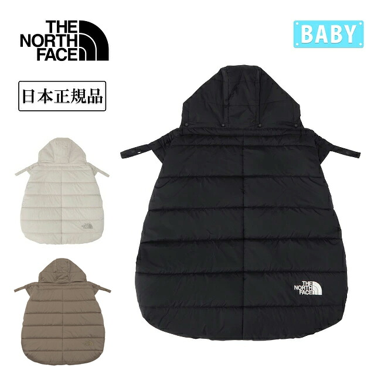

「高いけど、欲しい」。冬の赤ちゃん防寒グッズには、そう言われる代表格があります。THE NORTH FACEのベビーシェルブランケットです。Xでは「出産祝いで絶対外さない」「買って一番よかった」という声が何度も繰り返される一方で、「ベビーカーだと隙間風が入る」という正直な不満も出ています。
この記事では、Xで実際に買った・使った人の声が集まった冬のあたたかグッズを、本命のシェルブランケット、対抗馬のケラッタ、ベビーカー用フットマフのElodie、手頃派のニトリNウォームまで、価格帯の幅を持たせてまとめました。推す声だけでなく、買わなかった理由や合わなかった声もあわせて書きます。
本命：ベビー シェルブランケット（THE NORTH FACE）
抱っこ紐にもベビーカーにもクリップで取り付けられる防寒ブランケットです。撥水素材で雨や雪の日にも使え、使わないときはスタッフサックに収納できる、フードは取り外し可能、と紹介されています（型番NNB72301とするポストあり）。
Xでの反響は、今シーズンのベビー防寒グッズの中で突出しています。出産祝いの「絶対外さない」定番として推す投稿（いいね7,174）、「もらって困る人はいない」「買って一番よかった」という投稿（いいね1,649）、0歳の冬のお出かけリストに入れる投稿（いいね5,180）など、複数の大きな投稿が同じ商品を指しています。
このサイトの文脈で見逃せないのは、一人目は高いと見送って、二人目で購入したという声があったことです。「一人目のときは他のもので済ませたけれど、二人目では最初から良いものを」という判断は、二人目育児の買い物の典型でもあります。
そして買い時について。複数の投稿が、シーズン本番の12月には売り切れる（特にアイボリー）と伝えています。去年は冬本番になってから欲しい色が消えていた、という声もありました。出産祝いに贈るなら、寒くなってからではなく、シーズン入り前に渡すのが正解のタイプです。
正直な反対意見も書きます
良い声だけではありません。ベビーカーで使うとフィットに隙間ができて隙間風が入る、赤ちゃんが内側のポケットを蹴ってしまう、という使用感の投稿もありました。抱っこ紐中心の人には鉄板でも、ベビーカー中心の人には合わないことがある——この差は、買う前に知っておきたいポイントです。ベビーカー中心なら、次に紹介するフットマフ型の方が体に合う可能性があります。

対抗馬：防寒カバー（ケラッタ）
シェルブランケットの対抗馬として、Xで名前が挙がったのがケラッタの防寒カバーです。抱っこ紐とベビーカーの両方に使え、足まで覆えてフード付き。「ノースフェイスの代わりにこちらを使っている」という投稿がいいね1,073と大きく反響し、「ケラッタ使ってる」という同調の返信も付いていました。
位置づけは、ブランドで選ぶシェルブランケットに対して、実用と手頃さで選ぶ一枚です。楽天市場の取扱店では¥5,680〜で販売されています（2026年11月19日確認。クーポン配布等で変動します）。「高いけど欲しい」と「手頃で十分」の間で迷う人にとって、比較の軸になる商品です。
ベビーカー派に：フットマフ（Elodie）
ベビーカー中心の生活なら、防寒はフットマフ型が本命になります。北欧ブランドElodie（エロディ）のフットマフは、今回の調査でフットマフ枠の中で最も実使用の投稿が集まりました。「赤ちゃんがいつもより長く寝る」「上の子のものが暖かかったので今年も買う予定」という実感の声や、ダウンタイプについて「暑すぎないか心配したが問題なかった」という確認の投稿があります。洗濯機で洗えること、付けたままベビーカーを畳めることも紹介されています。
柄のバリエーションが多いので、出産祝いでは「ちょっと良いもの」枠に置けます。価格は調査時点では未確認です。なお、リンク先は上位モデルの「リュクス ウール＆ダウン フットマフ」のページです（通常モデルは今季分が完売しているため）。
なお、エアバギー純正のトップライン フットマフ（裏地がエコファーで糸くずが付きにくいと紹介）にも購入の声がありました。エアバギーを使っている家庭には純正という選択肢もあります。
手頃派の本命：Nウォーム 抱っこ紐ブランケット（ニトリ）
価格帯の下側を担うのが、ニトリのNウォーム抱っこ紐ブランケットです。価格は¥3,990（投稿記載）。去年は11月に売り切れた実績があり、今年は同じ価格のまま色数を増やして再販されていることが話題になっていました。
シェルブランケットとの価格差は歴然で、「高いけど欲しい」に対して「手頃でも、売り切れる前に買えば正解」という対比が作れます。寒冷地かどうか、外出の頻度で選ぶタイプが変わるという比較の声もありました。自腹の買い足しや、プチプラで済ませたい冬支度にはこちらです。
なお、ニトリ公式の現行ラインアップでは「Nウォーム極暖」シリーズの抱っこ紐ケープ／だっこ紐ブランケットが同じ¥3,990で販売されています（2026年11月19日に公式サイトで確認）。
上の子・防寒小物枠
二人目家庭では、上の子の防寒も冬支度の一部です。Xでは小物の単品レビュー自体は多くありませんでしたが、次のような声がありました。
- ベビー スノーミット（THE NORTH FACE）：ベビー用ミトン。ゴアテックス採用で雪遊び対応と販売店が紹介。価格¥8,250（投稿記載）
- キッズ ネックウォーマー（THE NORTH FACE）：「お下がりで登校したら、みんな既に持っていた」という投稿があり、キッズ層での定番ぶりがうかがえます。価格は未確認
- キッズ手袋（THE NORTH FACE）：親のバッグとお揃いで、子供が自分で選んだという投稿。価格¥4,400（投稿記載）
- トドラー コンパクトノマドジャケット＋マフラー（THE NORTH FACE）：上の子が去年この組み合わせで冬を越し、下の子は他ブランドからノースフェイスに乗り換えて新色を注文したという親の投稿。きょうだいでブランドを揃える動きが見えます。価格は未確認
可愛さで選ぶなら：冬用ブランケット（ファミリア）
シェルブランケットと迷って、「可愛い方」でファミリアの冬用ブランケットを選んだ、という投稿もありました。初めての冬用に購入し、赤ちゃんのアウターは手頃なもので済ませるというやりくりもあわせて語られています。出産祝いの定番ブランドだけに、ギフト文脈との相性は良い選択肢です。価格は未確認です。
抱っこ紐派のもう一つの候補として、スモルビの防寒ケープ（エルゴベビー対応のクリップで密着させる仕様）には、風の強い日の散歩でも赤ちゃんが眠り続けたという実使用の声がありました。
番外：押す人の防寒（エアバギー ハンドマフ）
赤ちゃんではなく、ベビーカーを押す人のための防寒です。エアバギーのハンドマフ（ハンドルに付ける手袋型の防寒具）は、「手袋よりあったかい」という実感の投稿がいいね1,918と大きく広がりました。冬のお出かけは、温めるべきは赤ちゃんだけではない——ママ自身へのギフトという変わり種の切り口になります。価格は未確認です。
使い方コラム：湯たんぽで赤ちゃんの布団を温める
商品ではありませんが、冬の寝かしつけで大きく広がった使い方を紹介します。就寝前に湯たんぽで赤ちゃんの布団を温めておく、という投稿が閲覧約180万と拡散しました（湯たんぽ自体は一般品で、寝る前に取り出す使い方です）。
子供向けの小さな実例としては、しろたんの湯たんぽカバー（マザーガーデン）を子供用に買ったという声や、充電式の電気湯たんぽ（atRise、¥3,480※セール時の投稿記載）を就寝前に子供の足元に入れる使い方の声がありました。なお、ベビー・キッズ専用の湯たんぽで大きく話題になった商品は、今回の調査では確認できませんでした。正直に書くと、湯たんぽはXでは大人とペットの文脈が中心です。
まとめ
- 抱っこ紐中心なら、シェルブランケット（THE NORTH FACE）が今シーズンの本命。出産祝いの鉄板という声が最も厚い一方、ベビーカーでは隙間風の声もあるので、使い方との相性確認が前提です
- ベビーカー中心なら、フットマフ型のElodieが実使用の声の中心です
- ブランドにこだわらず実用で選ぶならケラッタ、価格を抑えるならニトリNウォーム（¥3,990）が対抗軸になります
- 共通するのは買い時です。シェルブランケットもNウォームも、売り切れの声が出るのはシーズン本番。冬グッズは「寒くなってから買う」のでは遅い、というのがXの声から見える結論です
- 上の子にはネックウォーマーや手袋の小物枠、贈る側の変わり種には押す人用のハンドマフという選択肢もあります
冬の出産祝い全般の考え方は「二人目の出産祝いは何が正解？」、ブランケット類の受け取り側の評価は「本当に嬉しかった出産祝いランキング」のおくるみ・ブランケットの節もあわせてどうぞ。
この記事について
広告・PRについて
※この記事にはアフィリエイト広告（PR）が含まれます。記事内のリンクからご購入いただくと、当サイトに紹介料が支払われる場合があります。なお、商品の並び順や評価は広告の有無ではなく、下記の出典に基づいて決めています。
出典・調査根拠
本記事は、ママたちへの調査・SNSの声をもとに作成しています。商品の選定と声の引用は、2026年11月19日にX（旧Twitter）で収集したベビー・キッズ防寒グッズに関する投稿15件の集計に基づきます。本文中の声は、投稿内容を要約して紹介したもので、個別の取材や体験談の再構成ではありません。各声の出典は収集メモに記録しています。
価格について
価格は投稿に記載された金額をそのまま記し、確認できなかったものは「未確認」と明記しています。ケラッタ防寒カバー¥5,680〜とニトリNウォーム¥3,990は2026年11月19日に販売ページ・公式サイトで確認した価格です。スノーミットの¥8,250、キッズ手袋の¥4,400、電気湯たんぽの¥3,480（セール時）は投稿記載の価格です。実際の価格・在庫はリンク先でご確認ください。